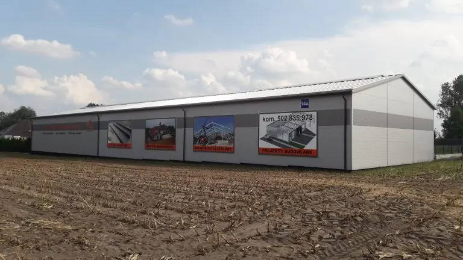
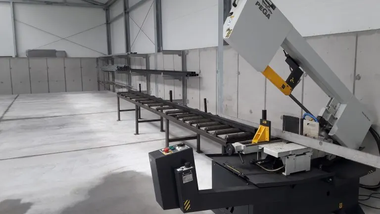
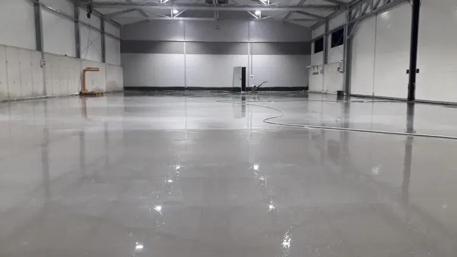

O firmie
AGRO-BUDOWA Jakuba Sieczki działa od 2006 roku. Budujemy głównie w gospodarstwach rolnych w Wielkopolsce.
Wyspecjalizowana firma z własną bazą
Naszą specjalnością jest budownictwo przemysłowe, przede wszystkim w gospodarstwach rolnych. Działamy lokalnie, w promieniu około 100 km od Konina, dzięki czemu na budowie jesteśmy na co dzień, a nie od święta.
Dysponujemy własnym specjalistycznym sprzętem, szalunkami i wykwalifikowaną załogą. W Kawnicach mamy halę o powierzchni ponad 800 m2 z placem 1500 m2 - tu powstają konstrukcje stalowe, które potem montujemy na budowie.
Konstrukcję dopasowuje do potrzeb inwestora biuro projektowe, z którym stale współpracujemy.



Jak pracujemy
- Rozmowa i projekt. Ustalamy przeznaczenie, wymiary i technologię. Pracujemy na Państwa projekcie albo przygotowujemy go z biurem projektowym.
- Fundamenty i żelbet. Roboty ziemne własnym sprzętem, zbiorniki, kanały i ściany wylewane w szalunkach na miejscu.
- Konstrukcja i pokrycie. Stal z naszej spawalni, cynkowana ogniowo, montowana przez naszą ekipę. Potem płyta warstwowa, świetliki, bramy.
- Wyposażenie i odbiór. Posadzki, place, a w budynkach inwentarskich wygrodzenia, poidła i kurtyny od sprawdzonych producentów.
Planują Państwo halę albo oborę?
Najszybciej przez telefon - porozmawiamy o wymiarach, przeznaczeniu i terminie. Można też wysłać zapytanie z projektem lub szkicem.